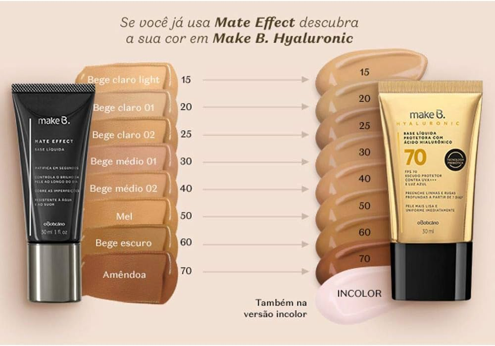
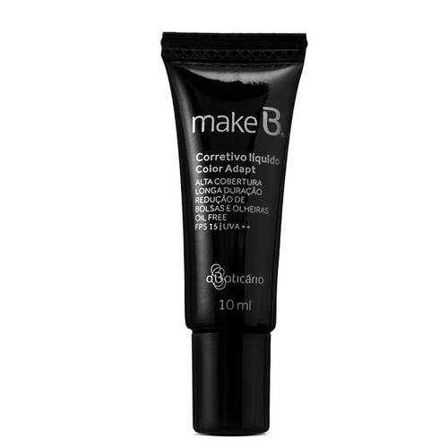
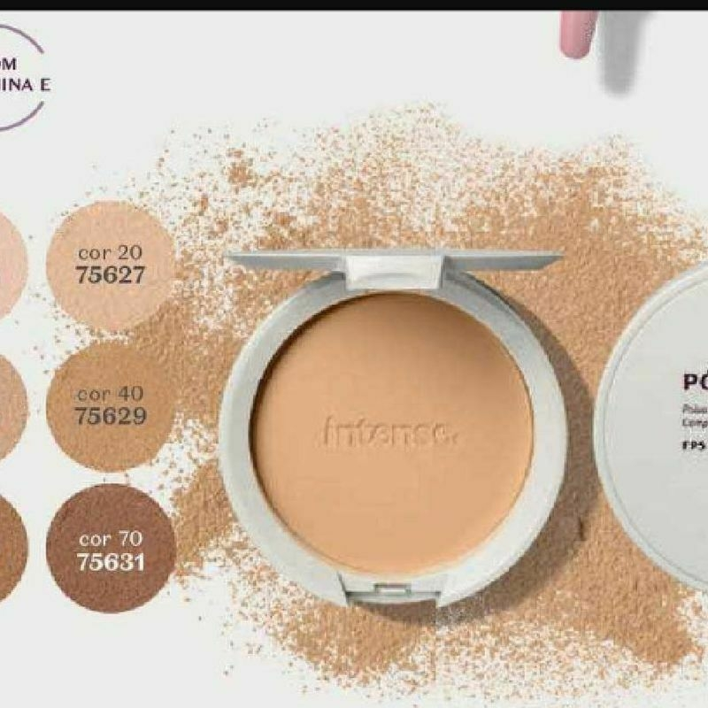
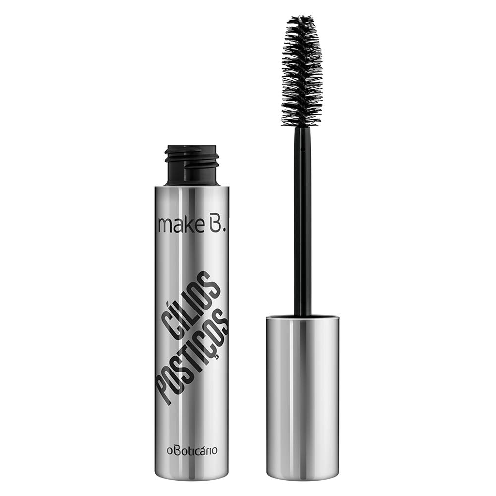
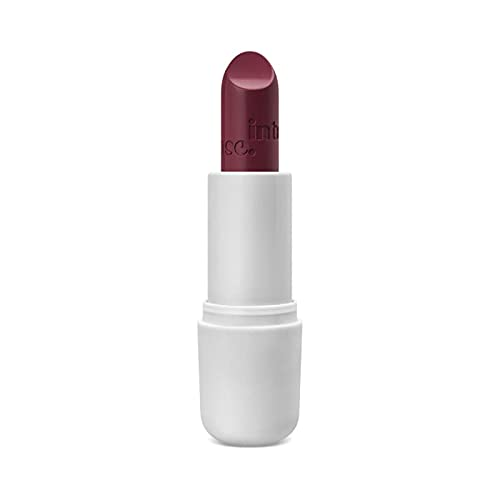

A base é o produto usado para uniformizar o tom da pele, disfarçar imperfeições e criar uma tela lisa para os outros produtos de maquiagem. Pode ser líquida, cremosa, em pó ou bastão, e deve ser escolhida de acordo com o tipo de pele e a cobertura desejada.
O corretivo serve para camuflar olheiras, manchas e pequenas imperfeições que a base não conseguiu cobrir completamente. Ele é geralmente mais espesso que a base e pode ser usado também para iluminar certas áreas do rosto.
O pó compacto ajuda a selar a maquiagem, controlar a oleosidade e prolongar a durabilidade da base e do corretivo. Ele pode ser translúcido ou com cor, e é aplicado principalmente na zona T (testa, nariz e queixo).
A máscara de cílios é usada para alongar, dar volume e destacar os cílios, abrindo o olhar e deixando os olhos mais marcantes. Existem fórmulas específicas para diferentes efeitos, como à prova d'água ou com efeito de cílios postiços.
O batom adiciona cor e vida aos lábios, podendo transformar totalmente um look. Ele existe em diversas texturas, como matte, cremoso ou gloss, e em uma infinidade de cores, das mais neutras às mais vibrantes.
